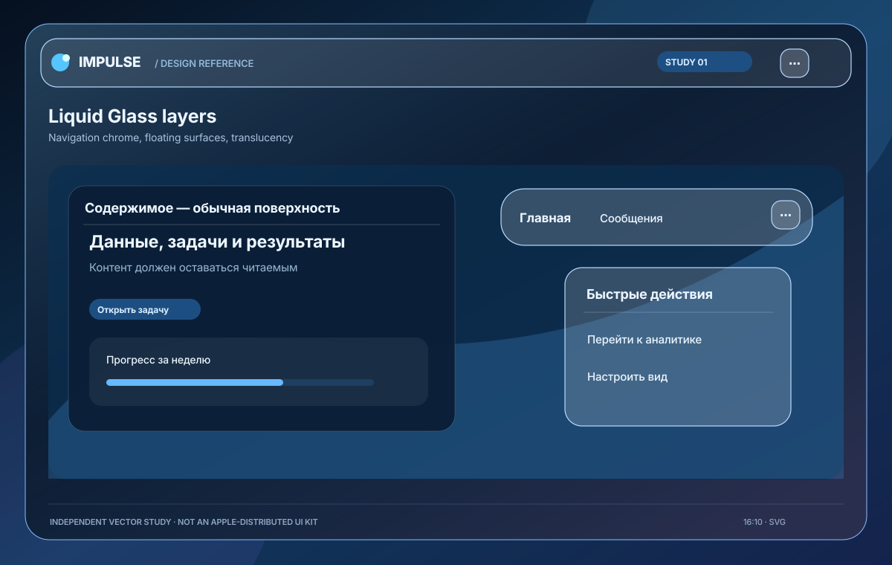
CASE 01 / SVG + SOURCE
Liquid Glass layers
Navigation chrome, floating surfaces, translucency
16 редактируемых SVG-визуализаций по сценариям. Это оригинальные примеры Impulse, а не экспорт официальных Apple UI Kits. Исходники Apple доступны по ссылкам в каждой папке; пиксельная идентичность не заявлена.

Navigation chrome, floating surfaces, translucency
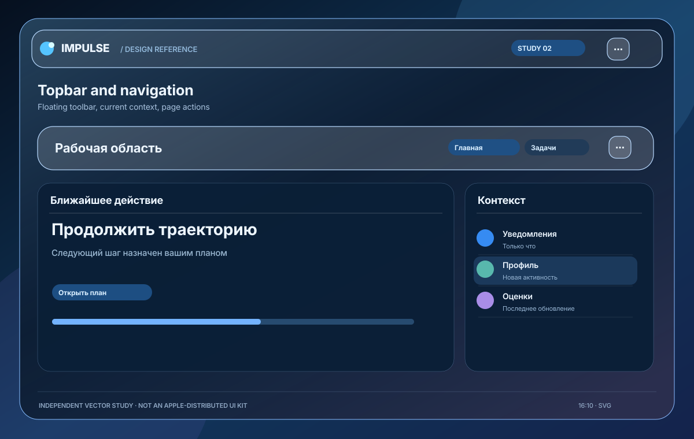
Floating toolbar, current context, page actions
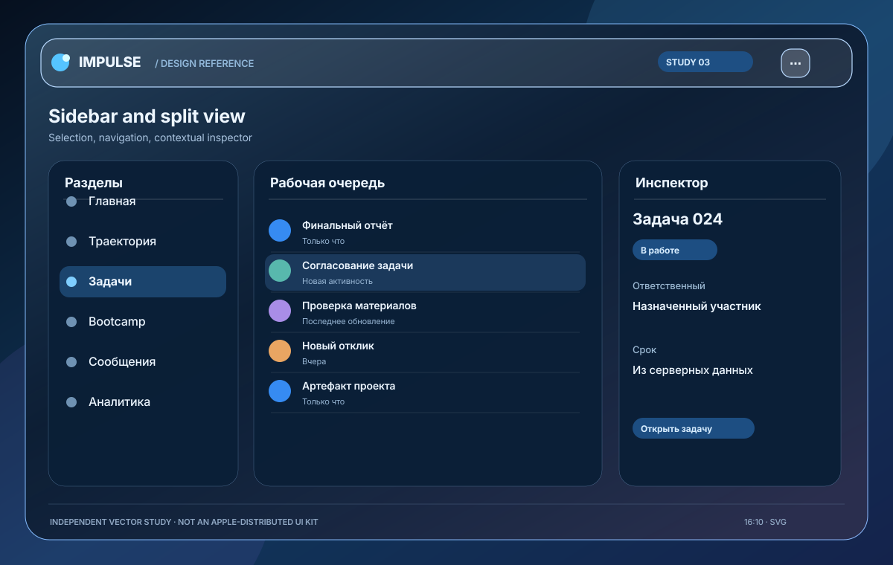
Selection, navigation, contextual inspector
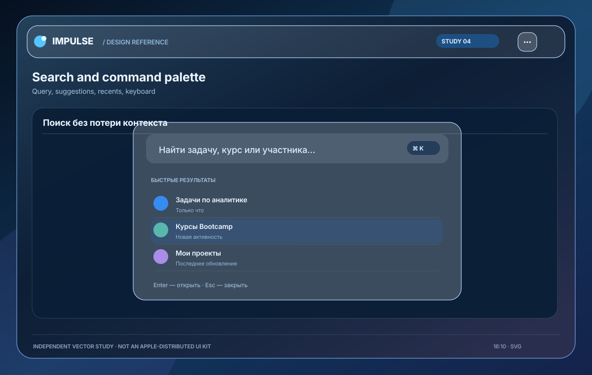
Query, suggestions, recents, keyboard
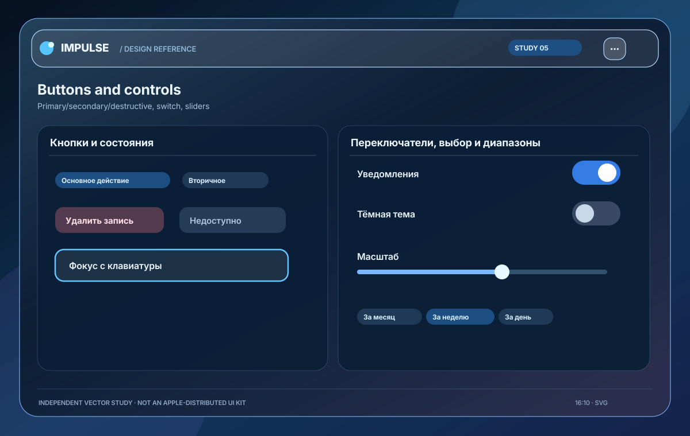
Primary/secondary/destructive, switch, sliders
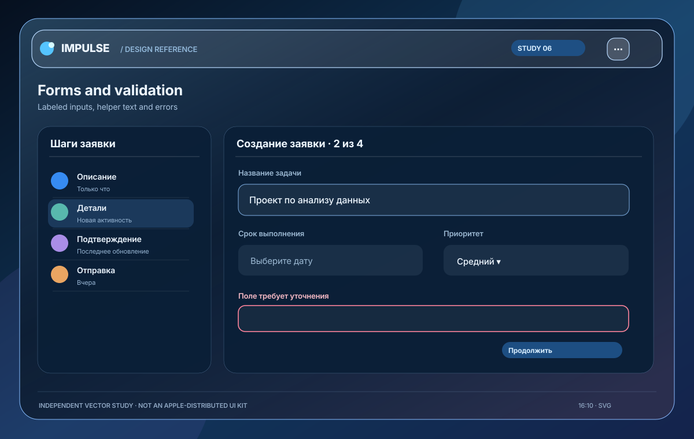
Labeled inputs, helper text and errors
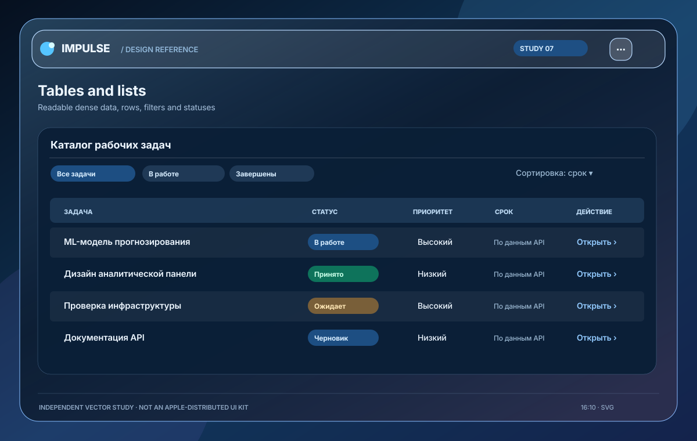
Readable dense data, rows, filters and statuses
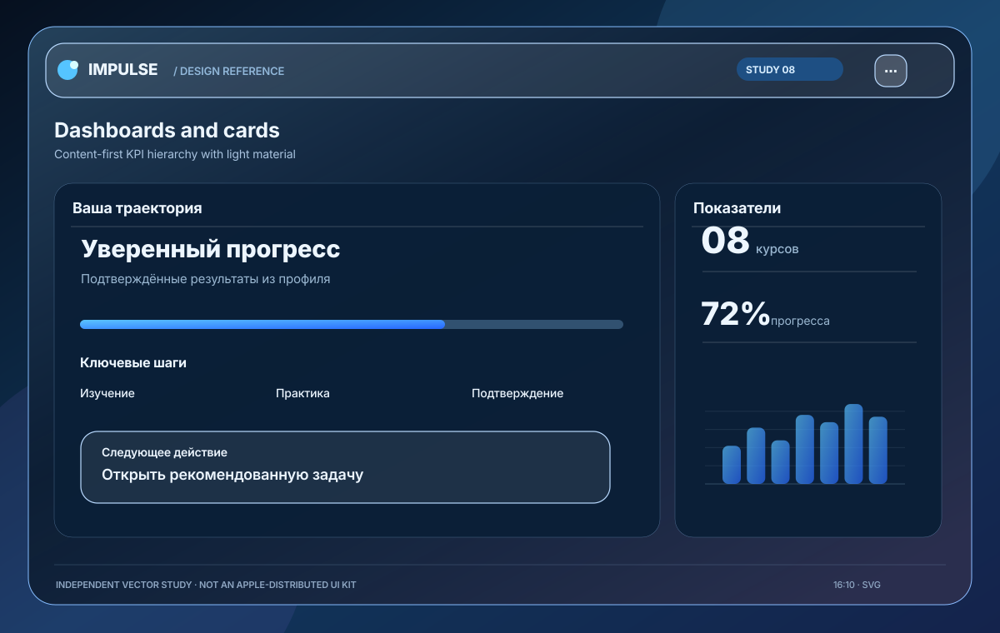
Content-first KPI hierarchy with light material
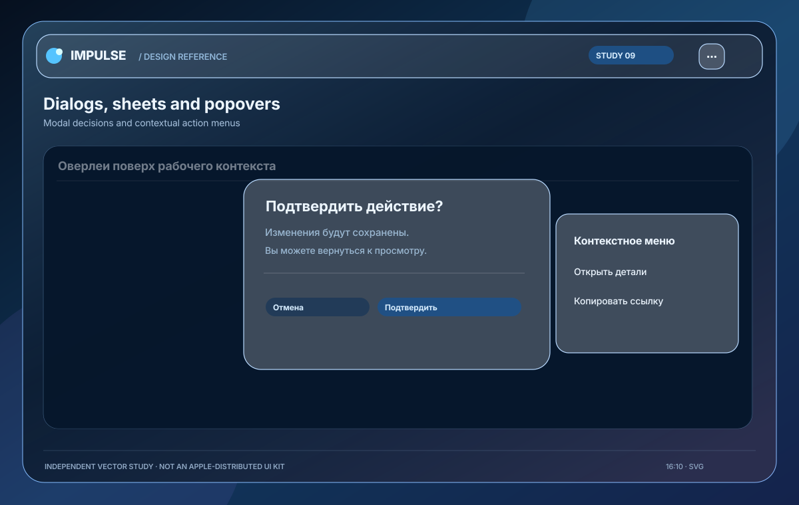
Modal decisions and contextual action menus
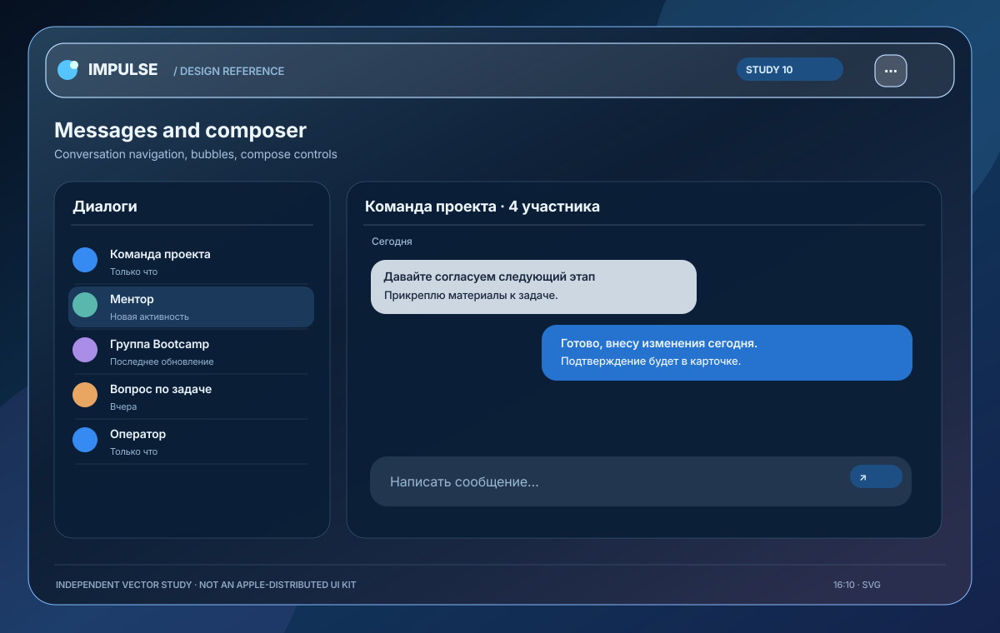
Conversation navigation, bubbles, compose controls
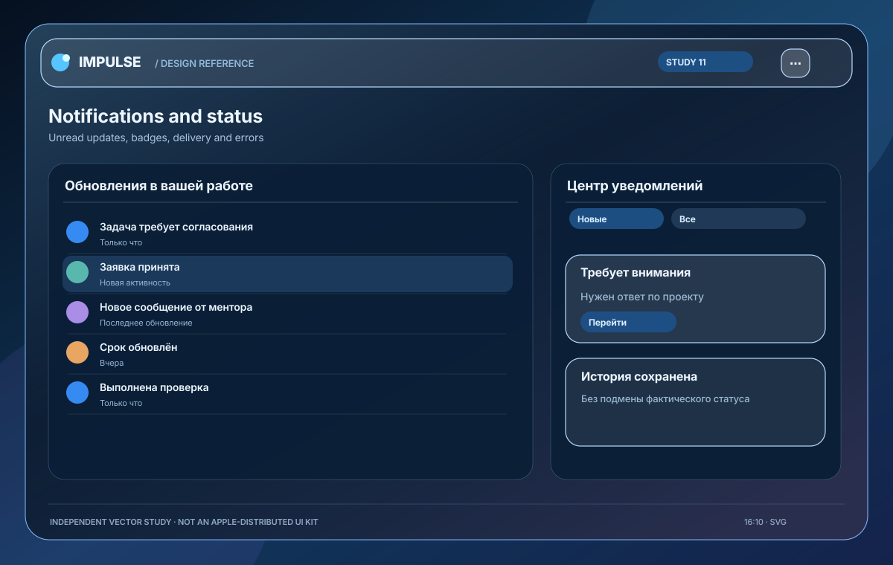
Unread updates, badges, delivery and errors
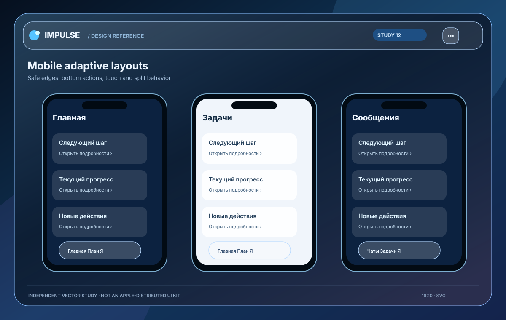
Safe edges, bottom actions, touch and split behavior
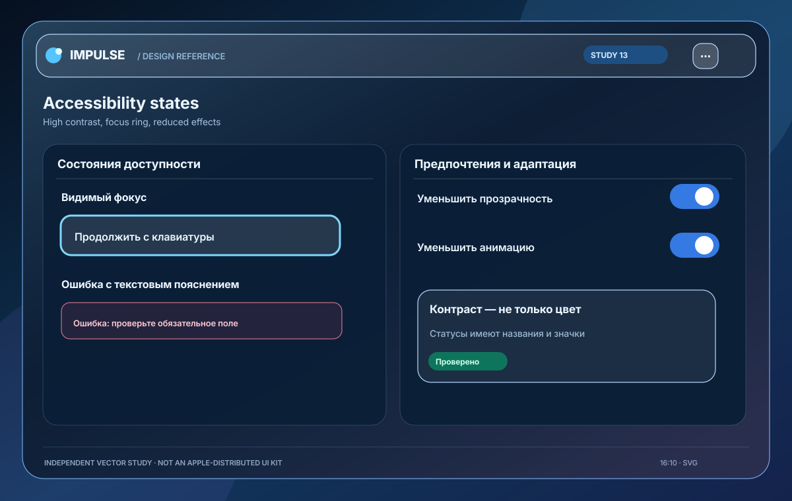
High contrast, focus ring, reduced effects
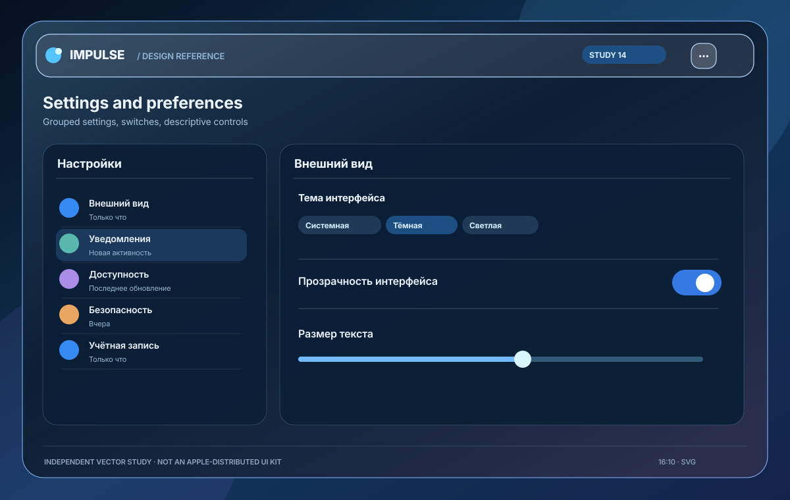
Grouped settings, switches, descriptive controls
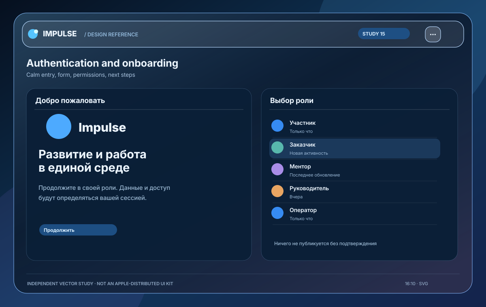
Calm entry, form, permissions, next steps
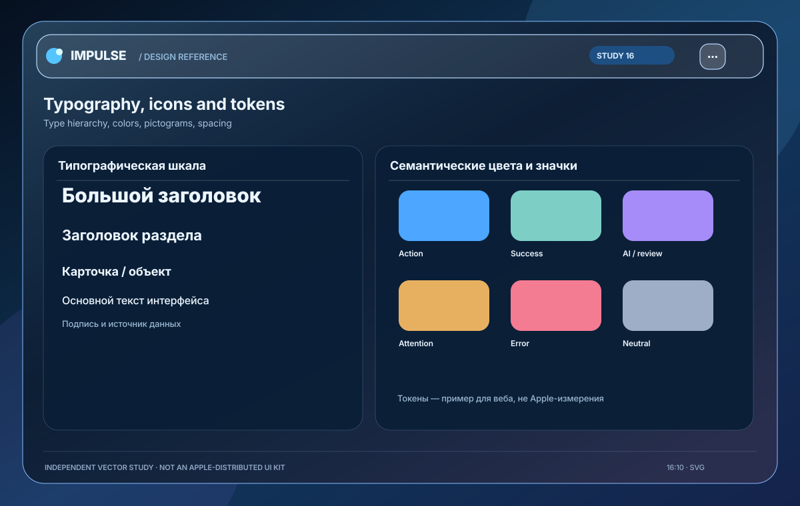
Type hierarchy, colors, pictograms, spacing